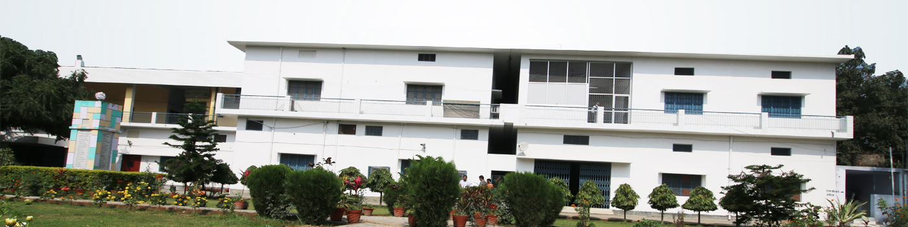

Why Choose Us
Establishment of TERI exemplifies constant urge of the Degree College Association to enrich its repertoire with the ever-changing demands of time. In1994, TERI was the first and only institute to offers MCA degree programme from Veer Bahadur Singh Purvanchal University, Jaunpur, and TERI also earned the unique distinction of being the first institute in Uttar Pradesh to offer MCA course apart from state-funded engineering colleges which were the only institutions allowed to run such programmes until 1994.The Institute took a step ahead in 1998 by introducing the MBA Degree Programme also from Veer Bahadur Singh Purvanchal University, Jaunpur. After the enactment of the Uttar Pradesh Technical University, Lucknow Act 2000, all technical courses running in various institutes of U.P. were affiliated to Uttar Pradesh Technical University located at I.E.T. Campus, Sitapur Road, Lucknow which is now known as Dr. A. P. J. Abdul Kalam Technical University, Uttar Pradesh, Lucknow.A further step towards backward integration of its course-max was taken in 2005 when graduate level degree courses of BBA and BCA were introduced. These courses are affiliated to Veer Bahadur Singh Purvanchal University, Jaunpur.Dr. A. P. J. Abdul Kalam Technical University, Uttar Pradesh, Lucknow. College Code: 040 .Veer Bahadur Singh Purvanchal University, Jaunpur, Uttar Pradesh. College Code: 141 .